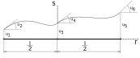
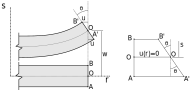

Viga de Euler-Bernoulli
Deslocamentos
Daqui para frente, esquece a viga real da ponte, esquece a ponte real e nos focamos apenas na idealização unidimensional. Da equação diferencial da viga de Euler-Bernoulli podemos chegar a conclusão de que as deflexões $w(x)$ podem ser escritos por um polinômio de grau 4 e a rotação da seção transversal $dw/dr$ por um polinômio de grau 3. O fundamental em elementos finitos é conseguirmos escrever esse campo de deslocamentos em função de deslocamentos nodais interpolados por funções de forma. Portanto, precisamos encontrar essas funções de forma. Observando o comportamento da seção transversal em um ponto, notamos que ela se desloca na direção do carregamento e também rotaciona em torno de um eixo perpendicular do plano XY, tal fato nos dá um dica sobre que tipo de grau de liberdade precisamos nos nós para representar esse efeito.
Informação
De uma forma bem simples, a ideia básica do método dos elementos finitos aplicados à estruturas é transformar essa viga com seus deslocamentos e rotações contínuos em $x$ em um elemento discreto com deslocamentos e rotações definidos apenas nos seus extremos ou nós, sendo os deslocamentos dentro desse elemento calculados através de uma interpolação, utilizando as chamadas funções de forma, dos deslocamentos nos nós ou nodais.
De outra forma, digamos que se conheçam os deslocamentos e as rotações nos nós desse elemento, sendo eles de valor qualquer $u_1$ e $u_2$ no nós 1 e $u_3$ e $u_4$ no nó 2 respectivamente, e que, através deles, queremos calcular os deslocamentos em qualquer ponto desse elemento, entre os nós 1 e 2. Digamos ainda que esse elemento tem comprimento L.

Observe que definimos 4 graus de liberdade no elemento, dois de deslocamentos e 2 de rotações.
O problema desse elemento de 2 nós e 4 graus de liberdade é que conseguiríamos no máximo utilizar como função de forma um polinômio de grau 3 que é insuficiente para interpolar as deflexões de uma viga $w$ e como, na teoria de Euler-Bernoulli, as rotações são escritas como a primeira derivada das deflexões, também não conseguiríamos interpolar com precisão as rotações com o elemento de dois nós.
Uma forma de resolver esse problema é adicionar um nó adicional no meio do elemento e escrever as funções de forma para um elemento de 3 nós e 6 graus de liberdade.

Com 6 graus de liberdade podemos escrever um polinômio de grau 5 para utilizar como função de forma, ordem mais que suficiente para interpolar as deflexões $w$ e as rotações.
Funções de forma
As funções de forma de cada grau de liberdade em cada nó podem ser encontradas partindo-se de um polinômio de grau 5 genérico e sua primeira derivada.
Sabemos que em cada nó esses dois polinômios devem ser iguais aos valores dos graus de liberdade respectivos, deslocamento ou rotação. Substituindo o valor de $r$ pela posição de cada nó e igualando os polinômios aos respectivos graus de liberdade, podemos escrever na forma matricial:
Os valores dos coeficientes A, B, ..., F dos polinômios são encontrados resolvendo-se o sistema acima, que resulta em:
Substituindo esse valores encontrados dos coeficientes nos polinômios da equação \eqref{polinomiode5} encontramos o polinômio de grau 5 que interpola as deflexões da viga com 3 nós:
Com essa equação \eqref{polinômiode5gls} é possível calcular a deflexão da viga em qualquer ponto no seu comprimento em função dos valores dos graus de liberdade. Portanto, para determinarmos as funções de forma para cada grau de liberdade basta isolar na equação \eqref{polinômiode5gls} cada deslocamento, ou seja:
De forma mais explícita:
Novamente, o campo de deflexões no domínio do elemento é interpolado pelas funções de forma em função dos valores dos deslocamentos nodais, ou seja:
A equação acima condensada é escrita como:
Essa equação de interpolação dos deslocamentos nodais em sua forma condensada é válida para qualquer elemento finito, seja o de treliça, de viga, de pórtico, de placa, de casca ou tridimensional, o que muda, obviamente, são as funções de forma na matriz $\textbf{N}$ e os deslocamentos nodais no vetor $\textbf{u}$.
Info
Vamos relembrar dentro das premissas do MEF do conceito de grau de liberdade. Os deslocamentos $u_1$, $u_3$ e $u_5$ e as rotações $u_2$, $u_4$ e $u_6$, dentro da conceituação do MEF, são chamados de graus de liberdade. Os graus de liberdade, no MEF, são as possíveis direções de deslocamentos, rotações, velocidades, acelerações, entre outros, que podem ser discretizados em um nó em função de um sistema de coordenadas referencial, aos quais estão associadas funções de forma que "distribuem" os seus efeitos dentro de um determinado elemento (ou no domínio de um elemento). Ou seja, o nosso elemento representativo de uma viga com 3 nós possui 6 graus de liberdade!
Então, como determinar os valores de deslocamentos associados aos graus de liberdade $u_1$, $u_3$ e $u_5$ e as rotações $u_2$, $u_4$ e $u_6$?
Resolução
Deformações
Os deslocamentos da seção transversal na viga $u(r,s)$, na teoria de Euler-Bernoulli, são função da deflexão $w(r)$ da viga, na linha neutra quando fletida e da posição $s$ na seção transversal, considerando-se a linha neutra com deslocamentos zero. Observe que esses deslocamentos não são constantes e são considerados com variação linear na seção transversal na teoria de Euler-Bernoulli.

Ou seja, para cada posição $s$ na seção transversal, existe um correspondente valor de $u(r)$, que pode ser escrito como:
Como estamos trabalhando com pequenas deformações, e isso é muito importante, o valor da $tan \theta$ se aproxima do próprio valor de $\theta$. Além disso, esse ângulo de giro, $\theta$, na teoria de Euler-Bernoulli, nada mais é que a variação em $r$ da função $w(r)$, que descreve a deflexão da linha neutra da viga. E, portanto:
Aproximação
De onde $tan \theta$ se aproxima do próprio valor de $\theta$?? Vamos ver: $\theta = 1 rad \ \therefore \ tan \theta = 1,557$, nem perto. Ok, que tal $\theta = 0,1 rad \ \therefore \ tan \theta = 0,10033$, melhor mas ainda tem diferença. Então $\theta = 0,01 rad \ \therefore \ tan \theta = 0,0100003$, melhor. Entendeu o quão pequeno? Detalhe $1^o = \pi/180 rad$, ou seja, $0,01 rad = 0,5729578^o$. Então quer dizer que se o giro da seção transversal foi maior que $0,57^o$, aproximadamente, está tudo errado!? Não, quer dizer que a formulação não se aplica pois $tan \theta \neq \theta$.
Sabemos que a deformação axial, por definição, é a variação do deslocamento axial em relação ao comprimento indeformado do elemento. Associando essa definição à equação \eqref{deslAxialViga} chegamos a:
Como serão aplicados as premissas de elementos finitos à deflexão da nossa viga $w(r)$, podemos reescrever as deformações utilizando as funções de forma e os deslocamentos nodais.
A matriz das derivadas segundas das funções de forma na equação é chamada de matriz $\textbf{B}$ em elementos finitos, e portanto, a equação pode ser rescrita de uma forma condensada como:
Da mesma forma a equação também é válida para qualquer elemento finito, seja o de treliça, de viga, de pórtico, de placa, de casca ou tridimensional, o que muda é a matriz das derivadas das funções de interpolação, $\textbf{B}$ e os graus de liberdade (ou deslocamentos) $\textbf{u}$.
Como no nosso caso:
Portanto:
Então:
Nem preciso falar que o $T$ significa que é uma matriz transposta, certo?
Observe que as funções precisam ser contínuas em suas segundas derivadas para que possam ser utilizadas no elemento de viga, diferentemente do elemento de treliça onde apenas a primeira derivada precisava de continuidade.
Equilíbrio
Agora precisamos colocar a nossa viga em equilíbrio, ou seja, todos os efeitos internos devem ser iguais aos efeitos externos. As tensões e deformações (internas) devem ser equivalentes às solicitações externas em seus efeitos, por exemplo trabalho, energia.
Estamos fazendo uma análise elástica linear estática considerando pequenas deformações, não queremos que nossa barra se movimente como um corpo rígido ou se deforme em excesso, nem que atuem sobre ela cargas que variam no tempo ou que perca energia através de algum processo dissipativo, além disso, desconsideramos os efeitos de amortecimento do material e da sua inércia, por se tratar de uma análise estática.
O equilíbrio das quantidades internas e externas nessas condições pode ser escrito através do Princípio dos Trabalhos Virtuais. Esse princípio, na mecânica dos sólidos, estabelece que o trabalho das forças internas (tensões), $W_i$ deve ser igual ao trabalho das forças externas (no nosso caso g), $W_e$, então:
O trabalho das forças internas, $W_i$, ou seja, o trabalho das tensões é calculando multiplicando essas tensões pelas suas respectivas deformações. O trabalho interno total é a soma das tensões multiplicadas pelas deformações em toda a barra da treliça, portanto:
O trabalho das forças externas agora é diferente, como aplicamos uma carga distribuída $g$ em todo o comprimento da viga e essa carga fez com que a viga se deslocasse em $w(r)$ também em todo o seu comprimento, o trabalho externo total é a soma da contribuição de cada pedacinho de $g \times w$ na viga
O detalhe aqui é que tanto $\varepsilon$ quanto $w(r)$ estão em equilíbrio, mas não sabemos quanto valem nem como mantém o sistema em equilíbrio. Para testar o equilíbrio desse sistema vamos perturbar ele, partindo de zero deslocamentos e perturbando com deslocamentos imaginários ou virtuais nos nós de $\delta u_1$, $\delta u_3$ e $\delta u_3$ e rotações virtuais de $\delta u_2$, $\delta u_4$ e $\delta u_6$.
Sendo assim, nossa deformação virtual se escreve:
E o deslocamento virtual total $\delta w(r)$ é escrito com a interpolação dos deslocamentos virtuais nodais pelas funções de forma.
Substituindo esses valores respectivamente nas equações e fazendo o equilíbrio, chegamos à:
Como estamos trabalhando com um material respondendo a tensões e deformações com valores que estão dentro do limite linear elástico, ou seja, o valor das tensões e deformações não podem ser maiores que as limites que indicam o final da resposta linear elástica do material, $\sigma \leq \sigma_{lim}$ e $\varepsilon \leq \varepsilon_{lim}$.

Além disso, como as tensões são proporcionais às deformações no regime elástico linear, podemos escrever que:
Observe que no caso da viga, mesmo com as deformações variando linearmente ao longo da seção transversal, $\sigma$ e $\varepsilon$ são escalares (ou tensores de ordem zero), pois apenas existe a componente na direção axial da viga. Aliás, $E$ também é um escalar (ou tensores de ordem zero) por estarmos trabalhando com a resposta mecânica do material em apenas uma direção.
Dessa forma, substituindo o valor de $\sigma$:
Como em nosso problema estamos discretizando utilizando MEF, substituímos a deformação $\varepsilon$ pela respectiva discretização utilizando as funções de forma e os deslocamentos nodais:
Como os deslocamentos $\delta \textbf{u}$ e $\textbf{u}$ não dependem do volume da viga, podemos retirá-los da integral.
Lembre-se de que os transpostos são adicionados para manter a multiplicação matricial possível quando $\delta \textbf{u}$ foi retirado da integral.
E, como $\delta \textbf{u}$ são os mesmos em ambos os lados da equação, ou seja, a perturbação que aplicamos externamente na viga teve igual reação interna, chegamos ao equilíbrio da nossa viga.
Que, em MEF, chamamos de equilíbrio estático e escrevemos de forma condensada como:
Com:
Sendo a integral no volume conhecida como matriz de rigidez do elemento, $\textbf{k}$ e $\textbf{f}$ o vetor de forças nodais equivalentes.
Matriz de rigidez do elemento de viga de Euler-Bernoulli
No caso da integral no volume, conhecida como matriz de rigidez do elemento, podemos abrir a integral em uma integral na área e outra no comprimento. No entanto, lembra que a matriz $\textbf{B}$ possui um $s$ multiplicando as derivadas segundas das funções de interpolação? Isso significa que as deformações são função tanto de $r$ quando de $s$ da seção transversal (não confunda o $s$ da seção com o $s$ do sistema de coordenadas). Isolando o $s$ de $\textbf{B}$, podemos escrever:
Sendo $\textbf{B}_r$ as segundas derivadas das funções de interpolação. Substituindo em \eqref{kvigaEB}:
Ao resolver a integral na área chegamos a um velho conhecido nosso, o segundo momento de área ou momento de inércia.
Substituindo, agora, os valores de $\textbf{B}_r$, realizando as multiplicações matriciais e resolvendo a integral:
Sendo:
O problema dessa matriz de rigidez é que ela está escrita para um elemento disposto na horizontal na direção do eixo r. Como transformar para o sistema de coordenadas X,Y global? Basta simplesmente substituir o comprimento do elemento $l$ pelo comprimento $L$ do elemento no sistema global na matriz de rigidez e pronto. E se o nosso elemento for inclinado? A resposta é simples, não se comportaria mais como uma viga, também teríamos solicitações axiais como na treliça então seria um elemento submetido a flexão composta normal. Portanto a matriz de rigidez no sistema local do elemento de viga coincide com a do sistema global da estrutura, pois sempre vamos considerar a viga disposta na horizontal para aplicar nossas definições visto que, em toda a formulação, tratamos apenas do efeito da flexão.
Vetor de forças nodais equivalentes
O vetor de forças nodais equivalentes também pode ser escrito como a força aplicada em cada nó. No caso da viga, como a carga é distribuída em todo o comprimento do elemento precisamos descobrir o quanto dessa carga vai para cada um dos graus de liberdade. Fazemos isso utilizando as funções de forma de acordo com:
Substituindo os valores de $\textbf{N}$ e integrando no comprimento da viga, ou seja de $-l/2$ até $l/2$:
Assim como na matriz de rigidez, o vetor de forças nodais equivalentes no sistema global é o mesmo do local porém com a substituição de $l$ pelo comprimento do elemento no sistema global $L$.
Atenção
Observe que esse vetor de forças nodais equivalentes somente funciona se o elemento estiver na horizontal e $g$ for constante em $r$ ou $X$ e perpendicular ao elemento na direção $s$ ou $Y$. $g$ foi considerado positivo no mesmo sentido dos eixos $s$ ou $Y$.
Agora vamos complicar um pouco adicionando o efeito da deformação causada pelo cisalhamento com a viga de Timoshenko.